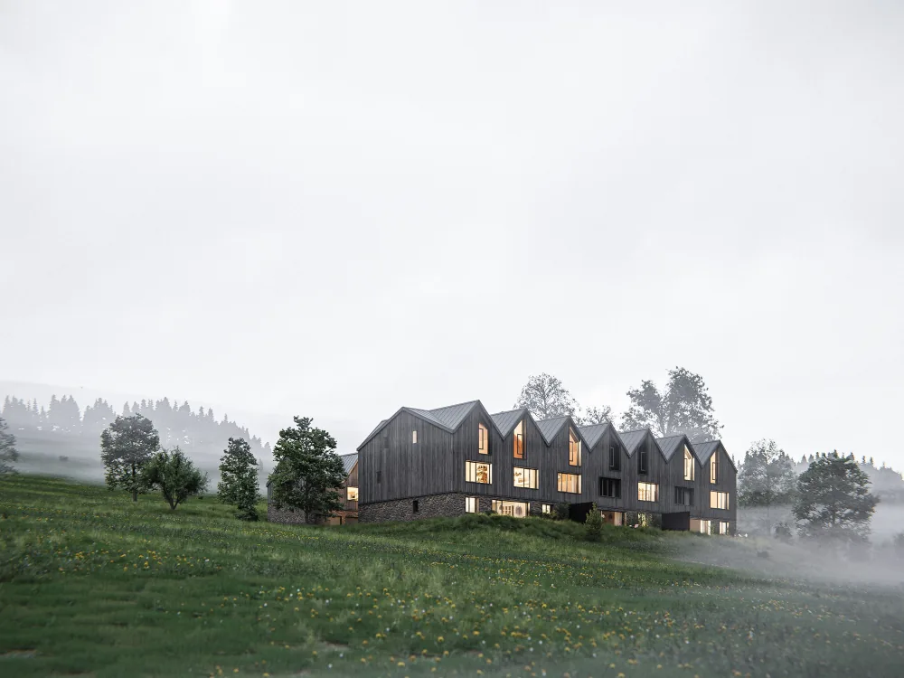
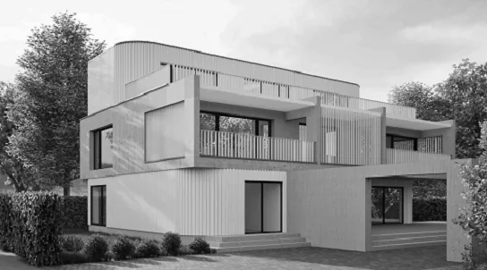
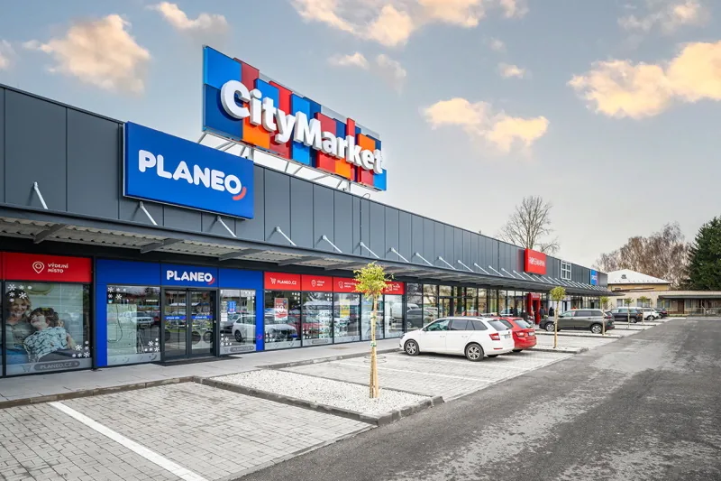
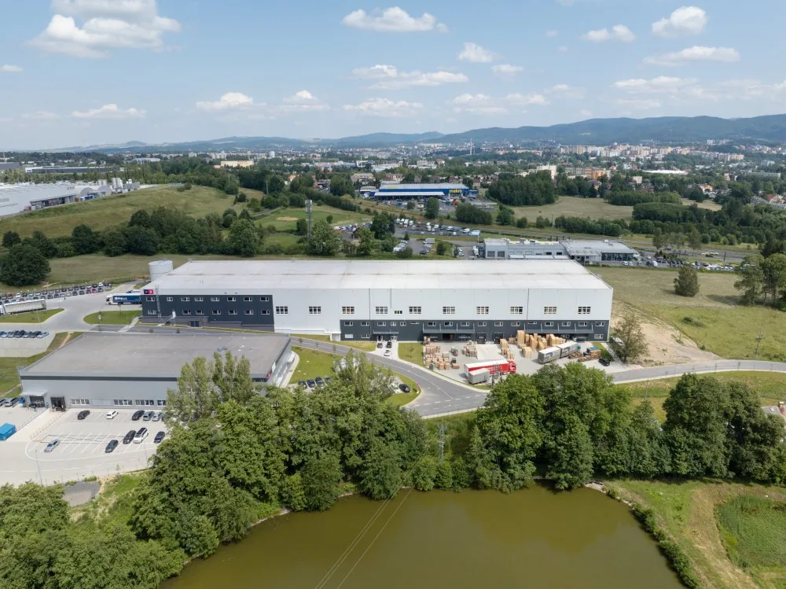
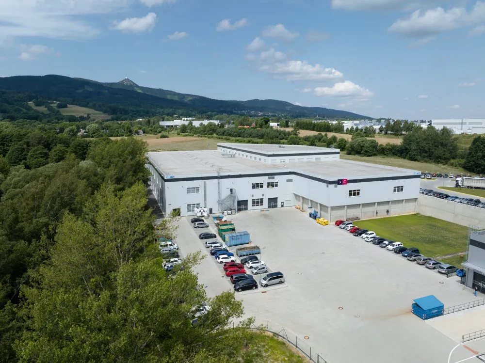
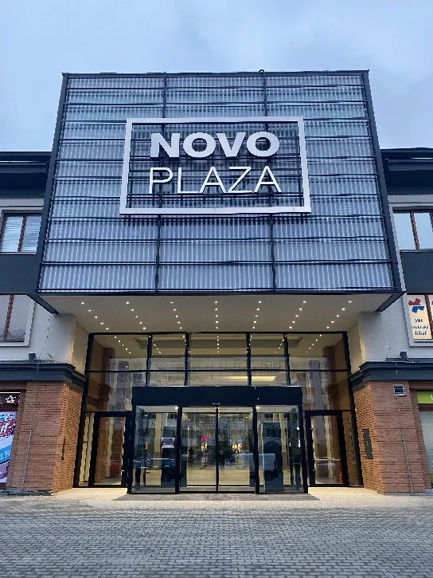
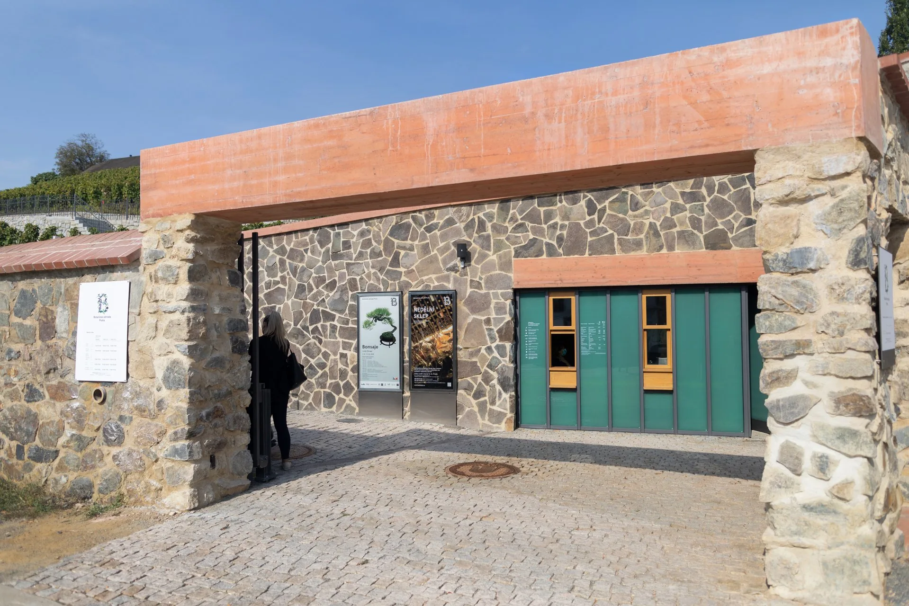
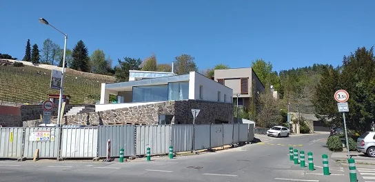

Bytový dům Prodloužená
Výstavba čtyřpatrového bytového domu.

Přehled dokončených i právě realizovaných staveb.
Přehled dokončených i právě realizovaných staveb.
Výstavba čtyřpatrového bytového domu.

VizualizaceNástavba, přístavba a celkové stavební úpravy původního rekreačního objektu.

Novostavba rodinného domu.
Nové parkoviště s infrastrukturou a sadovými úpravami.
Sanace střešního parkoviště obchodního centra.

Úpravy dispozic, technologií, fasád, střech a zpevněných ploch.
Obnova střešního pláště a teras.
Agrotechnology park Liberec
Hala C · hala B · hala A

4 fotkyVýstavba výrobně administrativní a skladové haly s infrastrukturou.
 4 fotky
4 fotkyVýstavba výrobně administrativní a skladové haly s infrastrukturou.

4 fotkyVýstavba výrobně administrativní a skladové haly s infrastrukturou.
Novostavba rodinného domu.
Sanace parkoviště, ramp, můstků a nosných konstrukcí.
Obnova zpevněných ploch a zámečnických konstrukcí.

Rekonstrukce obchodního centra včetně eskalátoru, sociálního zázemí a fasády.
Obnova podhledů, dveří, fasády a venkovních ploch.
Novostavba polyfunkčního objektu s prodejnou, kavárnou, bistrem a bytem pro soukromého investora.

Vybudování nového jižního vstupu do Botanické zahrady hl. m. Prahy.

Novostavba bytového domu.
Rekonstrukce střešního pláště prvního nadzemního podlaží a vybraných teras.
Modernizace obchodního centra včetně nájemních jednotek, vstupu a fasád.
Rekonstrukce rodinného domu.
Rozšíření prodejny a parkoviště za provozu.
Přístavba pekárny a výkupu lahví za provozu prodejny.
Sanace, zesílení a odvodnění mostních konstrukcí.
Napište nám, co plánujete a v jaké fázi přípravy se nacházíte. Projdeme zadání a domluvíme další kroky.